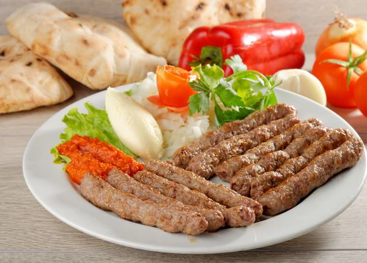

Ćevapi are a beloved Balkan street food, especially popular in Serbia. These small, juicy grilled sausages are made from a flavorful blend of ground meat and spices, shaped by hand and cooked over a hot grill. Served traditionally with fluffy somun bread, chopped raw onions, and ajvar (roasted red pepper spread), ćevapi are simple to make but full of rich, smoky flavor. Perfect for family gatherings, barbecues, or any time you crave authentic Serbian comfort food.
Serve with: fresh somun bread, chopped onions, and ajvar.
Home